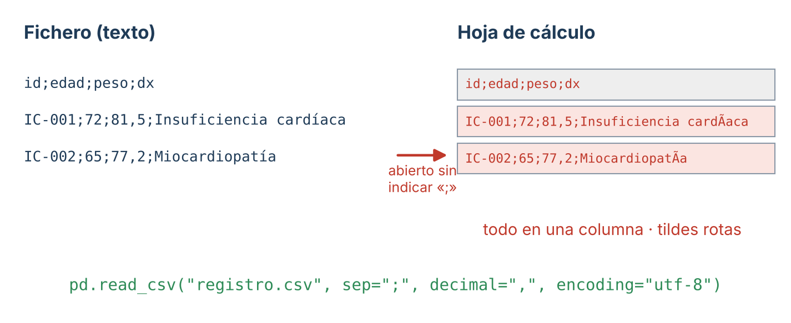
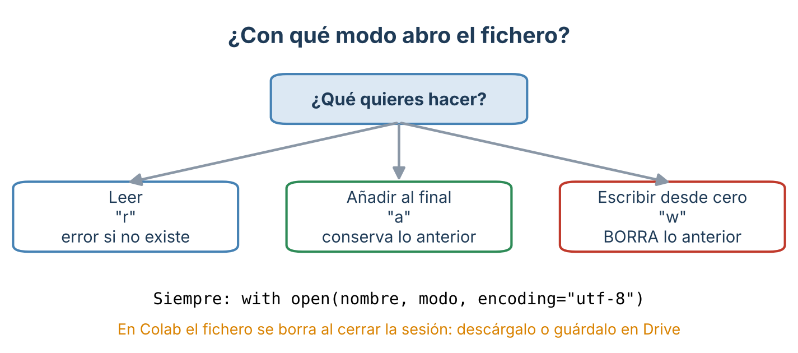
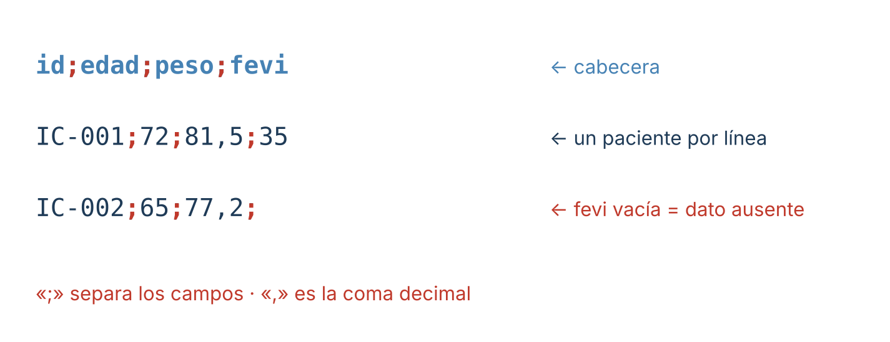
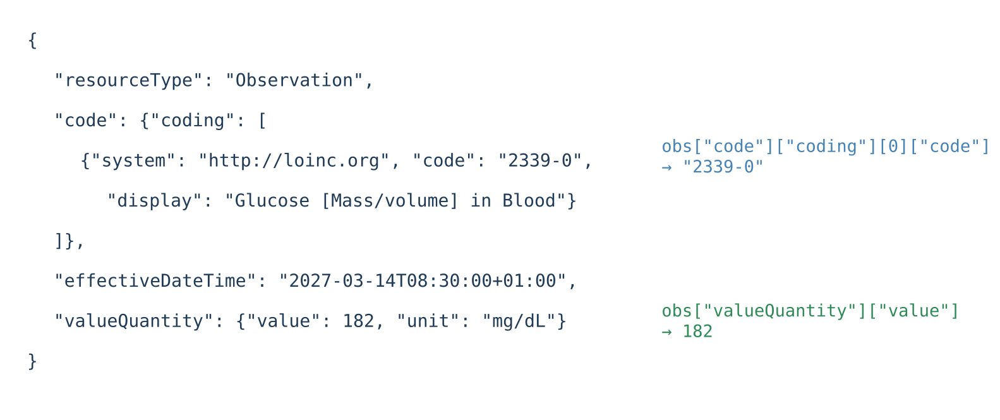

Bioestadística (1964) · Grado en Medicina · Curso 2027-2028
Tema 70Gestión de ficheros y formatos de intercambio de datos sanitarios: CSV y JSON
Módulo 2. Programando con IA
Fernando Borrás Rocher · Universidad Miguel Hernández de Elche · CC BY 4.0
Objetivos de aprendizaje
Al terminar esta sesión serás capaz de:
- Crear, leer y ampliar ficheros de texto desde Python.
- Guardar y leer una tabla de pacientes en formato CSV.
- Reconocer los problemas habituales de los CSV en español: separador, coma decimal y codificación.
- Convertir datos de Python a JSON y viceversa, y extraer información de un JSON anidado.
- Reconocer la estructura de un recurso del estándar sanitario HL7 FHIR.
- Entender la respuesta de una API, que llega en formato JSON.
Cómo usar esta presentación
Usa el selector de arriba para dar el tema en una sesión completa o en dos sesiones intercaladas.
🎓 Sesión de clase magistral
- 1. Caso clínico de partida 5 min
- 2. Conceptos clave 10 min
- 5. Autoevaluación 5 min
Explica los conceptos, haz la pausa activa y cierra con las ideas clave.
💻 Sesión de Colab
- 3. Demostración: ficheros, CSV y JSON 20 min
- 4. Práctica en la app Bioestadística 10 min
- 5. Autoevaluación 5 min
Cada estudiante abre su copia del cuaderno, predice el resultado y después ejecuta la celda.
Teclas: ← → para pasar · N notas del profesor · M cambiar de modo · F pantalla completa · Esc índice.
1. Caso clínico de partida
El CSV que se abrió mal

- Separador «;», coma decimal y tildes en UTF-8: si no se indican al leer, los datos se estropean.
- Los datos viajan en formatos de fichero; conocerlos evita perder información.
2. Conceptos clave
2.1 Ficheros de texto

Un fichero se abre con open(nombre, modo, encoding="utf-8"):
| Modo | Significado | Cuidado |
|---|---|---|
"r" |
Leer | Error si el fichero no existe |
"w" |
Escribir | Borra el contenido anterior |
"a" |
Añadir al final | Conserva lo que había |
Se usa siempre con with, que cierra el fichero automáticamente al terminar. La codificación UTF-8 representa correctamente tildes, eñes y símbolos como «µ» o «°».
En Colab, los ficheros creados se guardan en una carpeta temporal visible en el panel Archivos y se borran al cerrar la sesión. Para conservarlos hay que descargarlos o guardarlos en Drive.
2. Conceptos clave
2.2 CSV
CSV: una tabla escrita como texto

- Una línea por paciente; los campos separados por un carácter.
- La primera línea suele ser la cabecera con los nombres de las variables.
- Un campo vacío es un dato ausente, no un cero.
2. Conceptos clave
2.3 JSON
JSON: datos anidados, como un resultado de laboratorio HL7 FHIR

- Diccionarios dentro de diccionarios, y listas: el formato de las API y de la historia clínica electrónica.
- Para llegar a un dato se sigue el camino de claves: obs["valueQuantity"]["value"].
Pausa activa
Piensa 30 segundos, comenta con quien tienes al lado y vota.
Abres un fichero que ya contiene datos con open("datos.csv", "w"). ¿Qué ocurre con el contenido anterior?
En la sesión de Colab
Lo que acabas de ver se comprueba con datos en el cuaderno del Tema 70.
- Abre el cuaderno y guarda tu copia: Archivo → Guardar una copia en Drive.
- Ejecuta la celda de configuración.
- Ve a la demostración y predice cada resultado antes de ejecutar.
3. Demostración: ficheros, CSV y JSON
3.1 Escribir y leer un fichero de texto
▶ En tu cuaderno: 3.1 Escribir y leer un fichero de texto. Antes de ejecutar, escribe qué esperas obtener.
informe = """INFORME DE ALTA (paciente sintético IC-001)
Diagnóstico principal: insuficiencia cardiaca con fracción de eyección reducida.
Tratamiento al alta: sacubitrilo/valsartán, bisoprolol, dapagliflozina.
Revisión en consulta de Cardiología en 4 semanas.
"""
with open("informe_alta.txt", "w", encoding="utf-8") as fichero:
fichero.write(informe)
with open("informe_alta.txt", "r", encoding="utf-8") as fichero:
contenido = fichero.read()
print(contenido)Con el modo "a" se añade una línea sin borrar lo anterior. Leer con .readlines() devuelve una lista con una línea por elemento.
with open("informe_alta.txt", "a", encoding="utf-8") as fichero:
fichero.write("Alergias: no conocidas.\n")
with open("informe_alta.txt", "r", encoding="utf-8") as fichero:
lineas = fichero.readlines()
print("Número de líneas:", len(lineas))
print("Última línea:", lineas[-1].strip())3. Demostración: ficheros, CSV y JSON
3.2 Buscar información en el texto
▶ En tu cuaderno: 3.2 Buscar información en el texto. Antes de ejecutar, escribe qué esperas obtener.
texto = contenido.lower()
for farmaco in ["bisoprolol", "furosemida", "dapagliflozina"]:
print(f"{farmaco}: {'sí' if farmaco in texto else 'no'} aparece en el informe")3. Demostración: ficheros, CSV y JSON
3.3 Guardar una tabla en CSV
▶ En tu cuaderno: 3.3 Guardar una tabla en CSV. Antes de ejecutar, escribe qué esperas obtener.
El módulo csv escribe una lista de diccionarios como tabla. DictWriter usa las claves como nombres de columna.
import csv
pacientes = [
{"codigo": "IC-001", "edad": 72, "sexo": "M", "peso_kg": 81.5, "fevi_pct": 35},
{"codigo": "IC-002", "edad": 68, "sexo": "F", "peso_kg": 64.0, "fevi_pct": None},
{"codigo": "IC-003", "edad": 81, "sexo": "M", "peso_kg": 70.2, "fevi_pct": 28},
]
with open("registro_ic.csv", "w", encoding="utf-8", newline="") as fichero:
escritor = csv.DictWriter(fichero, fieldnames=["codigo", "edad", "sexo", "peso_kg", "fevi_pct"])
escritor.writeheader()
escritor.writerows(pacientes)
print(open("registro_ic.csv", encoding="utf-8").read())Observa que el dato ausente de IC-002 queda como una celda vacía.
3. Demostración: ficheros, CSV y JSON
3.4 Leer un CSV
▶ En tu cuaderno: 3.4 Leer un CSV. Antes de ejecutar, escribe qué esperas obtener.
DictReader lee cada fila como un diccionario. Todo llega como texto: hay que convertir los números y tratar las celdas vacías.
with open("registro_ic.csv", encoding="utf-8") as fichero:
lector = csv.DictReader(fichero)
for fila in lector:
edad = int(fila["edad"])
fevi = float(fila["fevi_pct"]) if fila["fevi_pct"] != "" else None
print(fila["codigo"], edad, "años · FEVI:", fevi)3. Demostración: ficheros, CSV y JSON
3.5 El CSV «a la española»
▶ En tu cuaderno: 3.5 El CSV «a la española». Antes de ejecutar, escribe qué esperas obtener.
Este es el aspecto de un CSV exportado desde una hoja de cálculo configurada en español: punto y coma como separador y coma decimal.
csv_espanol = """codigo;edad;peso_kg
IC-004;77;68,4
IC-005;59;92,1
"""
with open("registro_es.csv", "w", encoding="utf-8") as fichero:
fichero.write(csv_espanol)
with open("registro_es.csv", encoding="utf-8") as fichero:
lector = csv.DictReader(fichero, delimiter=";")
for fila in lector:
peso = float(fila["peso_kg"].replace(",", "."))
print(fila["codigo"], peso, "kg")Si se leyera con el separador por defecto (la coma), cada línea se partiría por la coma decimal y los datos quedarían desordenados. En el Tema 100, Pandas resolverá esto con dos parámetros: sep=";" y decimal=",".
3. Demostración: ficheros, CSV y JSON
3.6 JSON: de Python a texto y de vuelta
▶ En tu cuaderno: 3.6 JSON: de Python a texto y de vuelta. Antes de ejecutar, escribe qué esperas obtener.
import json
paciente = {"codigo": "IC-001", "edad": 72, "diabetes": True, "fevi_pct": None,
"farmacos": ["bisoprolol", "dapagliflozina"]}
texto_json = json.dumps(paciente, ensure_ascii=False, indent=2)
print(texto_json)Observa la traducción: True pasa a true y None a null. Con json.loads() se recupera el diccionario.
recuperado = json.loads(texto_json)
print(type(recuperado), recuperado["farmacos"][0])with open("paciente.json", "w", encoding="utf-8") as fichero:
json.dump(paciente, fichero, ensure_ascii=False, indent=2)
with open("paciente.json", encoding="utf-8") as fichero:
print(json.load(fichero)["edad"])3. Demostración: ficheros, CSV y JSON
3.7 Un resultado de laboratorio en HL7 FHIR
▶ En tu cuaderno: 3.7 Un resultado de laboratorio en HL7 FHIR. Antes de ejecutar, escribe qué esperas obtener.
FHIR organiza la información clínica en recursos (Patient, Observation, MedicationRequest…). Este es un recurso Observation simplificado con una glucemia, codificada con el sistema internacional LOINC. Para llegar al valor hay que recorrer los niveles de anidamiento.
observacion_fhir = """
{
"resourceType": "Observation",
"status": "final",
"code": {
"coding": [{"system": "http://loinc.org", "code": "2339-0",
"display": "Glucose [Mass/volume] in Blood"}]
},
"subject": {"reference": "Patient/IC-001"},
"effectiveDateTime": "2027-10-04T08:15:00+02:00",
"valueQuantity": {"value": 112, "unit": "mg/dL"}
}
"""
obs = json.loads(observacion_fhir)
codigo = obs["code"]["coding"][0]
print("Prueba:", codigo["display"], f"(LOINC {codigo['code']})")
print("Paciente:", obs["subject"]["reference"])
print("Resultado:", obs["valueQuantity"]["value"], obs["valueQuantity"]["unit"])3. Demostración: ficheros, CSV y JSON
3.8 La respuesta de una API
▶ En tu cuaderno: 3.8 La respuesta de una API. Antes de ejecutar, escribe qué esperas obtener.
Cuando, en el Tema 80, enviemos una pregunta a un modelo de IA, la respuesta llegará como un JSON parecido a este (simplificado). Lo que interesa está en lo más profundo: el texto generado y el número de tokens consumidos, que determina el coste.
respuesta_api = json.loads("""
{
"modelo": "modelo-ejemplo",
"candidatos": [
{"contenido": {"texto": "El IMC de 25,6 kg/m² corresponde a sobrepeso según la OMS."},
"motivo_fin": "STOP"}
],
"uso": {"tokens_entrada": 18, "tokens_salida": 16}
}
""")
print(respuesta_api["candidatos"][0]["contenido"]["texto"])
uso = respuesta_api["uso"]
print("Tokens totales:", uso["tokens_entrada"] + uso["tokens_salida"])Ampliación
Ampliación: subir ficheros y usar Google Drive
Para trabajar con un fichero de tu ordenador:
from google.colab import files
subidos = files.upload() # abre un diálogo para elegir el fichero
Para leer y guardar en tu Google Drive, de forma que los ficheros no se borren al cerrar la sesión:
from google.colab import drive
drive.mount("/content/drive")
# Tus ficheros quedan en /content/drive/MyDrive/
Recuerda: nunca subas a Colab ficheros con datos de pacientes reales.
Ampliación
Ampliación: errores frecuentes
Abrir en modo "w" un fichero que se quería conservar: se borra su contenido sin aviso.
Olvidar encoding="utf-8": las tildes se leen como símbolos extraños (por ejemplo, «Ã³» en lugar de «ó»).
No indicar el separador correcto al leer un CSV con punto y coma.
Usar los valores del CSV sin convertirlos: "72" + "5" es "725", no 77.
Confundir json.dumps() y json.dump(): el primero devuelve un texto; el segundo escribe en un fichero.
FileNotFoundError: el fichero no existe en la carpeta actual, o la sesión se reinició y los ficheros temporales se borraron.
Ampliación
Ampliación: Gestionar carpetas y ficheros con os
El módulo os crea carpetas, lista su contenido, comprueba si un fichero existe y lo borra. Es útil cuando hay muchos ficheros: por ejemplo, un informe por paciente.
Usa os.path.join() para construir las rutas. Así el código funciona igual en Windows, macOS y Linux.
En tus materiales SIMUSTAT: Tema 100. Módulos para el tratamiento de ficheros, apartado 1.
import os
os.makedirs("informes", exist_ok=True) # no da error si ya existe
for codigo in ["P01", "P02", "P03"]:
ruta = os.path.join("informes", f"{codigo}.txt")
with open(ruta, "w", encoding="utf-8") as f:
f.write(f"Paciente {codigo}: informe pendiente de revisar\n")
print("Contenido:", sorted(os.listdir("informes")))
print("¿Existe P02?", os.path.exists(os.path.join("informes", "P02.txt")))
os.remove(os.path.join("informes", "P03.txt"))
print("Tras borrar P03:", sorted(os.listdir("informes")))os.remove() borra el fichero sin pasar por la papelera. Antes de borrar en un bucle, imprime la lista de ficheros y compruébala.
4. Práctica en la app Bioestadística
Abre la unidad 70 de la app Bioestadística y completa sus misiones:
- Misión básica (sin asistente): identificar el separador, la coma decimal y los datos ausentes de varios CSV.
- Misión clínica (con pistas): leer un CSV de un registro sintético. Calcular la edad media y el número de pacientes sin FEVI registrada.
- Misión reto (con asistente): extraer el valor, la unidad y la fecha de un recurso FHIR Observation. Verificar el código que proponga el asistente con un segundo recurso distinto.
Al terminar, exporta el informe de la unidad.
5. Autoevaluación
Responde sin asistente y sin ejecutar código.
5. Autoevaluación
Elige una opción: verás la explicación.
Abres un fichero que ya contiene datos con open("datos.csv", "w"). ¿Qué ocurre con el contenido anterior?
Al leer un CSV con csv.DictReader, la edad aparece como "72". ¿De qué tipo es?
¿En qué se convierte el valor null de un JSON al leerlo con json.loads()?
Un CSV exportado de una hoja de cálculo en español contiene la línea IC-004;77;68,4. ¿Qué parámetros necesitas al leerlo?
En el recurso FHIR del apartado 3.7, ¿qué expresión obtiene la unidad del resultado?
Ideas clave
- Los ficheros se abren con
with open(..., encoding="utf-8"); el modo"w"sobrescribe. - CSV es el formato de las tablas; todo se lee como texto y hay que comprobar separador y coma decimal.
- JSON es el formato de los datos estructurados y anidados, de las API y del estándar HL7 FHIR.
- Para llegar a un dato en un JSON anidado se encadenan claves e índices.
Glosario
| Término | Definición |
|---|---|
| Codificación (UTF-8) | Forma de representar los caracteres, incluidas tildes y símbolos |
| CSV | Formato de tabla en texto plano con columnas separadas por un carácter |
| Separador | Carácter que separa las columnas de un CSV (coma, punto y coma, tabulador) |
| JSON | Formato de texto para datos estructurados y anidados |
| Serializar | Convertir datos de Python en texto (por ejemplo, JSON) para guardarlos o enviarlos |
| HL7 FHIR | Estándar internacional de intercambio de información sanitaria |
| LOINC | Sistema internacional de códigos para pruebas de laboratorio y observaciones clínicas |
| Seudonimizar | Sustituir los datos identificativos por un código, como IC-001 |
Para saber más
- Tutorial de Python: lectura y escritura de archivos
- Documentación del módulo csv
- Documentación del módulo json
- Especificación de HL7 FHIR
- SIMUSTAT Unidigital UMH. Tema 100. Módulos para el tratamiento de ficheros. Cuaderno de Google Colab. Elche: Universidad Miguel Hernández; 2023.